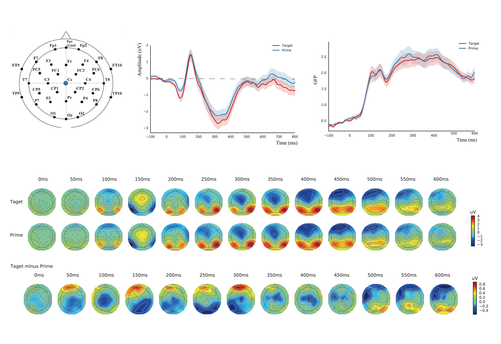

Figures

Conclusion
- We found significant correlations between word similarity generated from NLP models.
- GloVe, a model based on word co-occurrence within both global and local context, is the best predictor for ERP responses elicited between 200 to 300 ms in the posterior EEG sensors.
- Our findings revealed specifi c time courses of semantic processing, linked semantic representation in the human brain and NLP models, and provided an objective and reliable evaluation for NLP models.